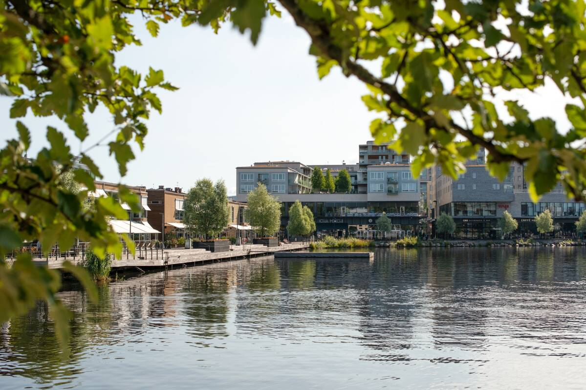
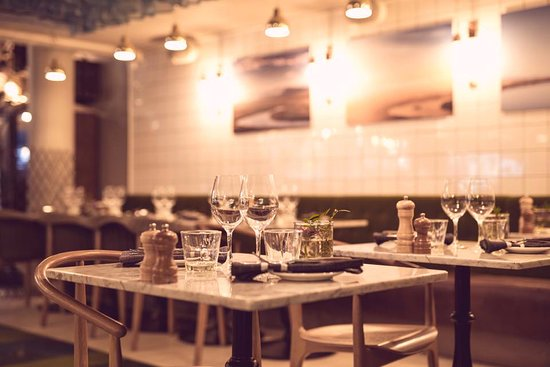

Jönköping
This is my city
About Jönköping
Jönköping is a beautiful city with bunch of activities that you can do. Not only that the city has some very beautiful views from above the city. The city has many good resturants that gets filled up with people. Jönköping is a city on the shores of Lake Vättern, in southern Sweden. It's known for its long lakeside beach, Vätterstranden. In the center is the 19th-century Sofia Church, with its neo-Gothic design and towering spire. Nearby, the Jönköping County Museum is home to artworks by local fairy-tale illustrator John Bauer. On the lake island of Visingsö is the Erstad marsh, home to waterbird colonies.


What are the good places to eat?
- Dal baffo
- Aqua dinner & drinks
- Ombrelli
- NEO
- La Locandiera Ristorante & WineBar
- Icha Mochi
- Ciro
What can you do?
- Bowling at Elmia
- Yoump
- Rosenlundsbadet
- John Bauers museum
- Match museum
- Play tennis, badminton, squash, curling.
- Visit Gränna